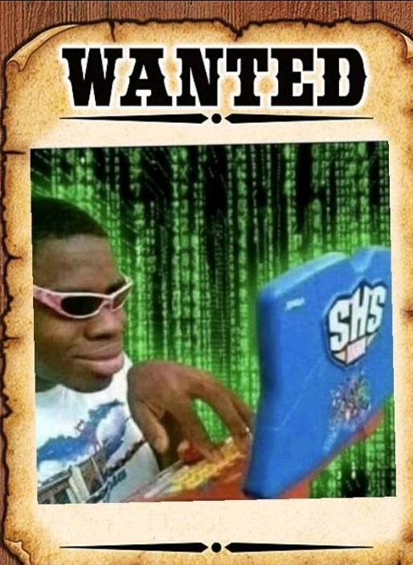
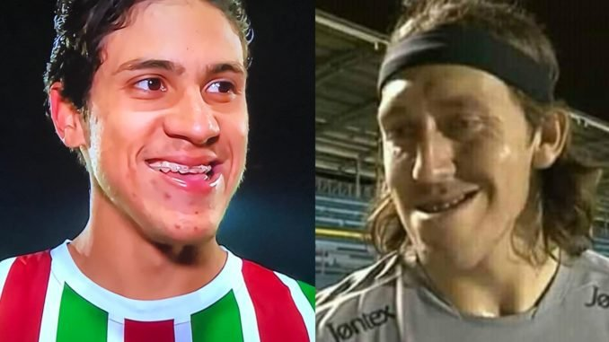

Onze entre dez cientitas elegem café como melhor bebida do mundo
Especialistas afirmam que sua pesquisa não é enviesada e baseada em fatos científicos. Utilizando ténicas
avançadas de medição e coleta de dados, a afirmação fez com que a bebida se tornasse a mais barata nos
mercados do mundo devido a alta demanda repentina.

Hacker invade servidor do Tiktok e apaga todo o site
Hacker conhecido como ®oqu€ invadiu os servidores da empresa chinesa dona do Tiktok e ja é tratado como
héroi mundialmente.

Futebolístas disputam final do CQ23
Pedro do flamengo e Cassio do corinthias são dois finalistas do campeonato Queixada 2023. Essa final reflete
a rivalidade entre as equipes dentro e fora do campo, dividindo a paixão das duas maiores torcidas do
brasil.